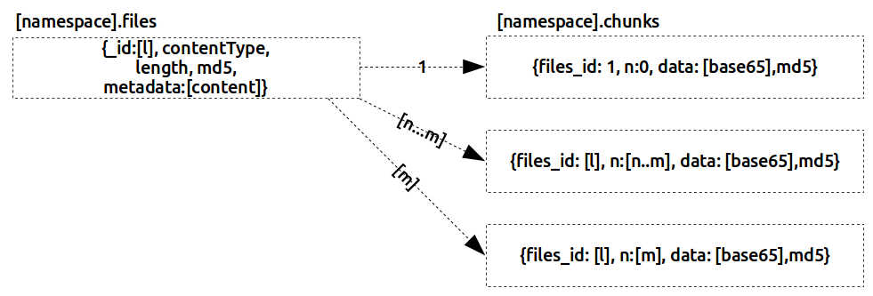

5 Archival Storage - Reference Documentation
Authors: Lucien van Wouw
Version: 1.4
Object repository
|
(Quick Reference)
5 Archival Storage - Reference DocumentationAuthors: Lucien van Wouw Version: 1.4 5 Archival StorageChunked dataPhysically the data is stored into a NoSQL database called MongoDB using the native driver support of GridFS. With GridFS a document is created with the md5 checksum, contentType, length in a files collection. The ingest procedure will add to this the preservation descriptive information. The actual byte stream is split up into 64MB sized segments called "chunks". Each segment is stored as a document in a corresponding chunks collection. There is a one-to-many relation between the document in the files collection and the documents in the chunks collection. Whilst the files document contains the md5 for the entire file, each individual chunk has it's own checksum. This is not part of the gridFS convention, but is added for future services that are responsible for error detection and repair of stored chunks. Should corruption turn its ugly head, it will be easier to repair a small chunks; than the larger file it is part of. The object-repository stores "master" files for preservation and "level1", "level2" and "level3" types of derivatives. Hence the namespace of the collections are named accordingly.ReplicationData is mirrored by real-time replication. Each write to the primary database is copied to the replica. As the primary databases are situated in a different datacenter than the secondary databases, there always is a copy should one of the datacenter become unavailable - or at wost is destroyed.Uninterrupted data deliveryTo avoid a single point of failure the repository storage is constructed from replica sets. The replicaset is made out of a single readwrite primary server which is responsible for storing content. The secondary read-only servers can deliver content to the dissemination package. Should a primary fail because of a defect or be down for maintenance; then the secondary will take over the role of primary and resume normal operations. However, write actions are suspended until the intended primary is available again.Scalability by clusteringAs the volume of the storage cannot be hold onto a single storage device, a distributed solution is implemented by sharding. A shard contains a fragment that is part of the entire volume of data. When volume increases beyond the current storage capacity, new shards can be added to facilitate the extra needed storage. This makes the solution completely scalable.In addition: should a primary server in the cluster go down for whatever reason, then any ingest action can proceed via the other primaries in the cluster. |